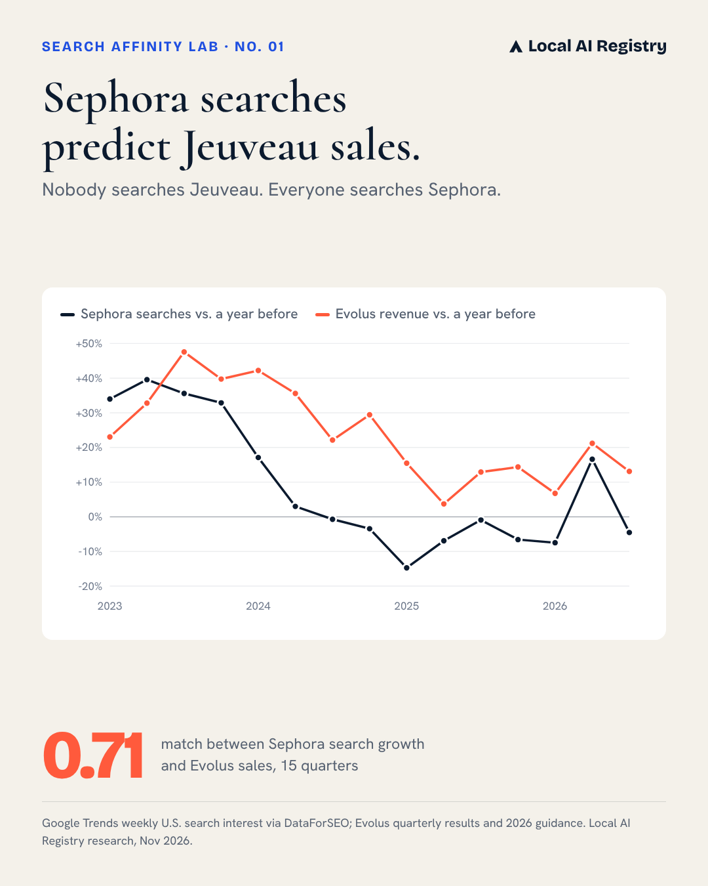
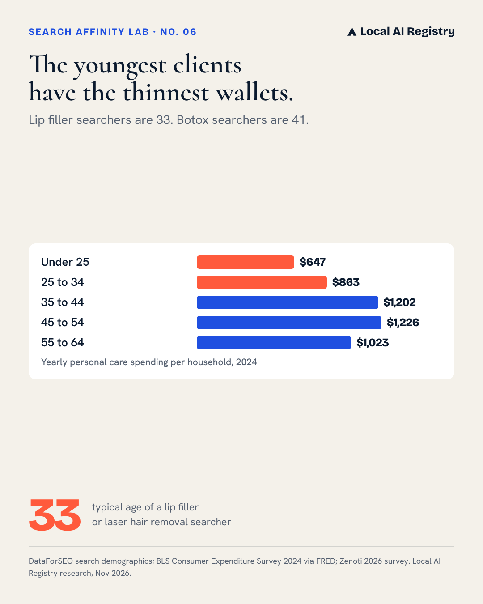
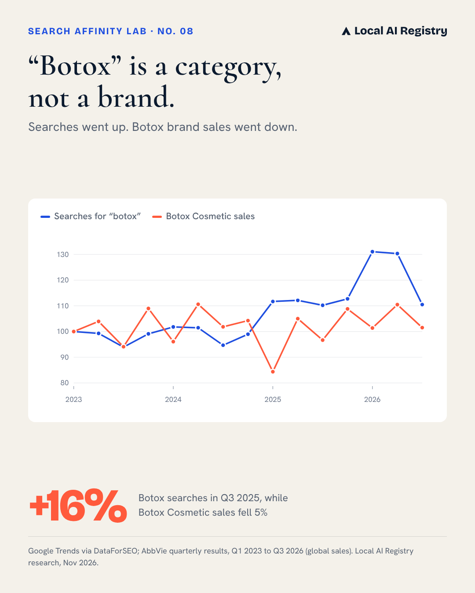
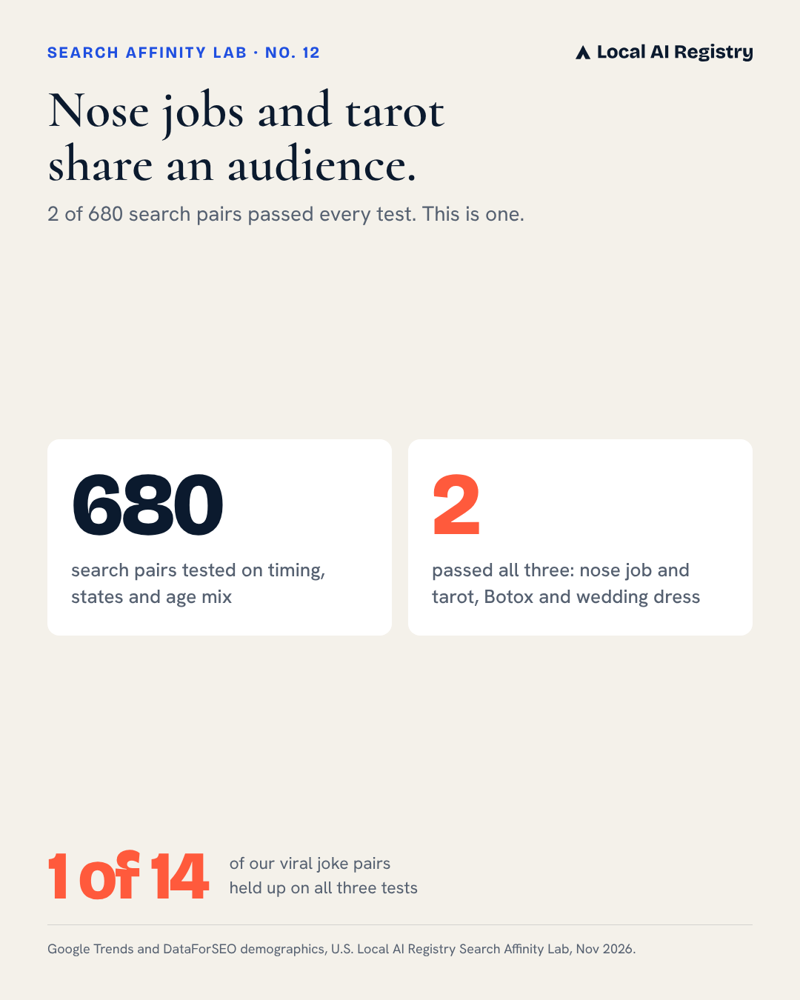

Every post is 1080 × 1350 (Instagram 4:5). Download one at a time or grab everything in a zip. Each caption has a copy button.
12 posts · New
Search Affinity Lab
The research findings: Sephora predicts Jeuveau, our Q4 call, who the med spa client is. Post the Q4 call (No. 02) soon, so we can grade it in public in January.

Search Affinity Lab · No. 01
Caption
Jeuveau gets about 18,100 searches a month. Sephora gets 6.1 million. So we stopped watching Jeuveau and started watching Sephora.
We tested 101 popular searches against Evolus's quarterly sales (Evolus makes Jeuveau). Sephora came out on top: its search growth matches Evolus's sales growth at 0.71 over 15 quarters. Jeuveau's own searches? −0.08.
Same shopper, same beauty budget, 338 times more data.
Local AI Registry research. Not investment advice.
Search Affinity Lab · No. 02
Caption
We're putting a number on it before the company does.
Sephora searches from October 4 to November 14 are up 7.5% on last year. Plugged into our model, that points to about $107M in Q4 revenue for Evolus, the maker of Jeuveau. Evolus's own full-year guidance leaves room for $95M to $102M.
Tested on past quarters, the model landed within 7% of actual sales in 11 of 14. Evolus shared early Q4 numbers on January 9 last year. We'll report back either way.
Not investment advice.
Search Affinity Lab · No. 03
Caption
Our first guess: when people spend on a luxury gym, they spend less on injectables. Over five years, Equinox searches and Jeuveau sales do move in opposite directions (−0.78).
Then we checked quarter by quarter. Nothing (0.02). Two slow trends just happened to point opposite ways. Also, “Equinox” is a car and a season.
The lesson: a good stand-in has to match the ups and downs, not just the long trend. Sephora does. Equinox doesn't.
Search Affinity Lab · No. 04
Caption
We combined eight treatment searches (Botox, lip filler, microneedling, HydraFacial and more) into one score for every state. The state map that matches it best is Pilates, at 0.81.
Next up: Tesla, Rolex, Love Island and Uber Eats. The opposite map belongs to fishing licenses and crockpots.
Top states: Florida, Arizona, Colorado, Utah and California.
Med spa owners: your Pilates studio neighbor is your best partner.
Search Affinity Lab · No. 05
Caption
Men make up about 46% of searches for liposuction, facelifts and nose jobs. That's about the same as their share of everyday searches.
For upkeep (Botox, nails, lashes, spray tans) their share drops to 22% to 33%.
We can't tell whether he's searching for himself or for someone else. But if you only market surgery to women, you're missing half the searches.

Search Affinity Lab · No. 06
Caption
The typical lip filler, laser hair removal or Brazilian wax searcher is about 33. The typical Botox searcher is about 41.
That gap matters. Households under 35 spend $647 to $863 a year on personal care. Households 35 to 54 spend about $1,200.
Younger clients stretch harder to pay: in a 2026 Zenoti survey, 26% of Gen Z had delayed medical or dental care to pay for beauty.
For younger treatments, payment plans and memberships do the selling.
Search Affinity Lab · No. 07
Caption
Botox searches hold steady in January to March. Botox sales to clinics run 8% below average, then jump in spring.
Part of that is clinics stocking up in Q4. But the searches don't stop. People are researching in Q1 and booking later.
If you cut marketing after the holidays, you go quiet right when people are deciding.

Search Affinity Lab · No. 08
Caption
In 2025, searches for “botox” rose 10% to 16% year over year. Sales of the Botox brand fell 5% to 12%.
People type “botox” for any wrinkle shot, the way they say Kleenex for any tissue. The same year, Jeuveau searches and sales both grew.
So watch searches for your own name, not the category word.
Search Affinity Lab · No. 09
Caption
Club Pilates searches stopped growing in mid-2025. A few months later, same-store sales at its parent company turned negative and kept falling, to down 7.5% by Q3 2026.
Meanwhile, plain “pilates” searches were still up 17% in Q2 2026. People wanted Pilates. They just weren't searching for that brand.
For any local business: when searches for your name drop and your category doesn't, someone is taking your clients.
Search Affinity Lab · No. 10
Caption
When aesthetic clients were asked what they'd cut to save money, treatments came last. Only 24% would cut them. 54% would cut dining out first.
Everything above aesthetics on this list is where their money goes today. That makes them your competition for the same dollars, and your best partners.
Search Affinity Lab · No. 11
Caption
We checked “botox near me” against dozens of everyday searches: do they rise together, in the same states, with the same age mix?
Wedding and dating searches pass the most tests. Pilates passes on states and age, and fitness is one of the last things clients cut.
Wine matches on states too, but dining out is the first thing clients cut. Try a one-off event before a standing deal.
Bridal shops and Pilates studios: call your local med spa.

Search Affinity Lab · No. 12
Caption
Remember our Correlation, Not Causation posts? We put all 14 joke pairs through three tests: do they rise together, in the same states, with the same age mix?
13 fell apart. One held up. Across 680 pairs, only two passed everything: nose job and tarot, and Botox and wedding dress.
The cards were right.
The Search Affinity Lab posts use Google Trends and Google Ads data via DataForSEO, Evolus, AbbVie and Xponential quarterly results, the BLS Consumer Expenditure Survey and published client surveys. Full method and sources: proposals.localairegistry.com/lab/search-affinity/. The Q4 revenue estimate is our research, not investment advice.
AI is changing every day. Local AI Registry's dedicated local AI research team keeps testing to find what works best.